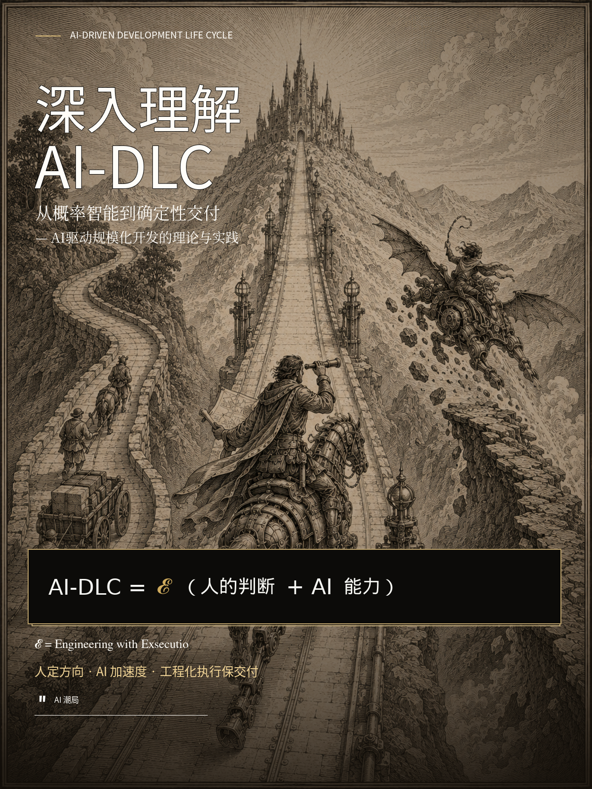

AI-DLC Book · Carbon Reading
深入理解 AI-DLC
从概率智能到确定性交付 — 三阶段生命周期、30 项可复现实验与 Exsecutio 工程边界。
AI-DLC = 𝓔（人的判断 + AI 能力）
𝓔 = Engineering with Exsecutio
𝓔 = Engineering with Exsecutio

AI-DLC Book · Carbon Reading
从概率智能到确定性交付 — 三阶段生命周期、30 项可复现实验与 Exsecutio 工程边界。